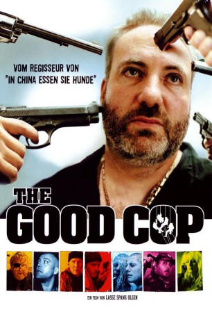

IMDB-Wertung: 5.8 / 10
IMDB-Wertung: 5.8 / 10  Metascore:
Metascore: 
Nach "In China Essen Sie Hunde" ein weiterer skurriler Film vom dänischen Regisseur Lasse Span Olsen.
 IMDB-Wertung: 5.8 / 10 Metascore:
Nach "In China Essen Sie Hunde" ein weiterer skurriler Film vom dänischen Regisseur Lasse Span Olsen.
Jahr: 2004
Dauer: 86 Minuten
FSK: 16
Land: Dänemark Studio: Kinowelt Home EntertainmentTonspuren: DD2.0 - ,
Untertitel:
Auflösung: 1080p (1920x1036) Größe: 4055 MB
Regisseur: Lasse Spang Olsen
Drehbuch: Kim Bodnia, Lasse Spang Olsen
Soundtrack: George Keller
Darsteller:
 Kim Bodnia als Jens
Kim Bodnia als Jens Nicolas Bro als Mulle
Nicolas Bro als Mulle Iben Hjejle als Louise
Iben Hjejle als Louise Thomas Bo Larsen als Per
Thomas Bo Larsen als Per Nikolaj Coster-Waldau als Sune
Nikolaj Coster-Waldau als Sune Rikke Louise Andersson als Reporter
Rikke Louise Andersson als Reporter Laura Drasbæk als Kate
Laura Drasbæk als KateDatei: X:\NEU\Good Cop, The (2004, FSK16, 1920x1036).mkv seit 30.12.2019
 Es gibt insgesamt 187 Filme in der Gruppe 'NEU'
Es gibt insgesamt 187 Filme in der Gruppe 'NEU'